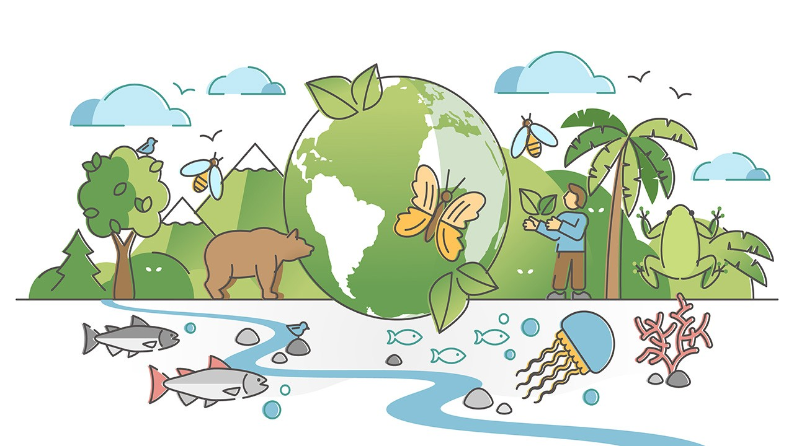

Biodiversity is a broad term for biological variety, and it can be measured at a number of organizational levels. It refers to every living thing, including plants, bacteria, animals, and humans.
Genetic diversity (or variation) is the raw material for adaptation in a species. Differencces of DNA among the individuals.
The number of different ecosystems on Earth or in a geographical area. Variety of habitats, ecosystems, and communities.
The number of kind of species being found. Variety of species in a given area.
In this pattern of biodiversity, species living in similar ecosystems but in different parts of the world make them distantly related as they act and look quite similar.
In this pattern of animal biodiversity, species different often occupy habitals area within a local.
By the studies of fossils, it was found that some were enormous versions of modern-day species.\
Latitudinal gradients: Species diversity is maximum near the equator and decreases as we move away from the equator towards the pole. It means biodiversity is more at lower latitude near the equator and less at higher latitude near poles.
Seasonal Pattern: During different seasons, the diversity of species varies. In the
rainy season, the diversity of insect species increased and decreased during winter. Bird
diversity is related to the migratory activity and breeding season.
Successional Pattern: After a disturbance, plants and animal species begin to reoccupy
the habitat. They grow and get replaced by other species. This pattern of the temporal shift
in the species composition of a community is called succession.
Evolutionary Pattern: Over 600 million years of animal evolution, increasing biodiversity
have been found over each regime and era. Some animals have been extinct, some are still found as
living fossils, and some are represented as missing links or existing links in the history of evolution.
Biogeography is the study of the distribution of the world’s species both in the past and in the present.
Studies the current factors affecting the distribution of plants and animals.
Studies the past distribution of species.
Focused on the protection and restoration of species based upon the known historical and current ecological information.
Many medications are derived from natural chemicals made by a diverse group of organisms. For example, many plants produce secondary plant compounds, which are toxins used to protect the plant from insects and other animals that eat them. Some of these secondary plant compounds also work as human medicines.
Since the beginning of human agriculture more than 10,000 years ago, human groups have been breeding and selecting crop varieties. This crop diversity matched the cultural diversity of highly subdivided populations of humans. For example, potatoes were domesticated beginning around 7,000 years ago in the central Andes of Peru and Bolivia.
Humans obtain food resources from wild populations, primarily wild fish populations. For about one billion people, aquatic resources provide the main source of animal protein.